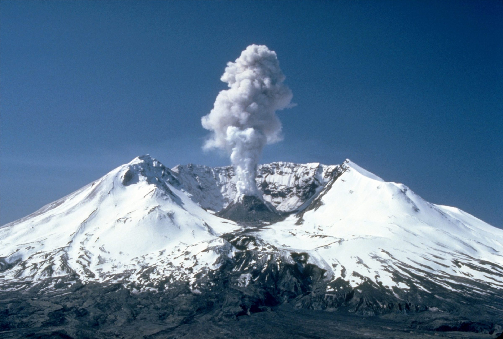

Top 10. Mount St. Helens (1980)
Description
Mount St. Helens (known as Lawetlat'la to the local Cowlitz people, and Loowit or Louwala-Clough to the Klickitat) is an active stratovolcano located in Skamania County, Washington, in the Pacific Northwest region of the United States. It lies 52 miles (83 km) northeast of Portland, Oregon, and 98 miles (158 km) south of Seattle. Mount St. Helens takes its English name from that of the British diplomat Alleyne Fitzherbert, 1st Baron St Helens, a friend of explorer George Vancouver who surveyed the area in the late 18th century.
History
Mount St. Helens is a volcano located in southwestern Washington state. It’s the most active volcano in the Cascade Range, a mountain range that extends from British Columbia through Washington and Oregon to northern California. For thousands of years, Mount St. Helens has alternated between times of explosive eruptions and long periods of relative calm. But on May 18, 1980, after experiencing a couple of months of earthquake activity and weak volcanic flare-ups, Mount St. Helens erupted violently, decimating everything in its path.
The 1980 volcanic explosion claimed more than 50 lives, destroyed thousands of acres of land and wiped out entire animal and plant communities. It darkened skies for hundreds of miles, sent a huge ash cloud circling around the globe and dramatically changed the landscape of the mountain and its surrounding areas.